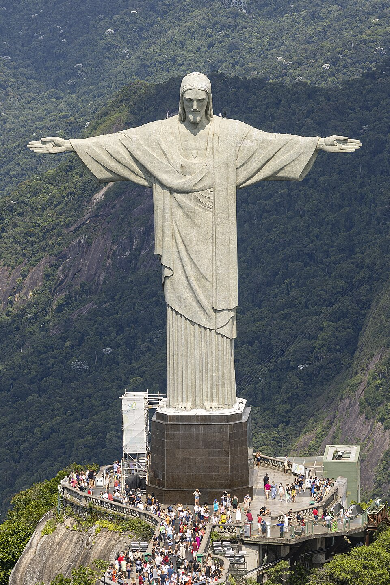
Cristo Redentor
Reconocer el monumento y situarlo en Brasil.
Arne Müseler
Arne Müseler / www.arne-mueseler.com
Ficha original · CC BY-SA 3.0 de
Miniatura de Wikimedia Commons, sin recorte adicional.
Pendiente de revisión pedagógicaSelección inicial para revisión. No importada al catálogo. Créditos y licencias por imagen.

Reconocer el monumento y situarlo en Brasil.
Arne Müseler
Arne Müseler / www.arne-mueseler.com
Ficha original · CC BY-SA 3.0 deMiniatura de Wikimedia Commons, sin recorte adicional.
Pendiente de revisión pedagógica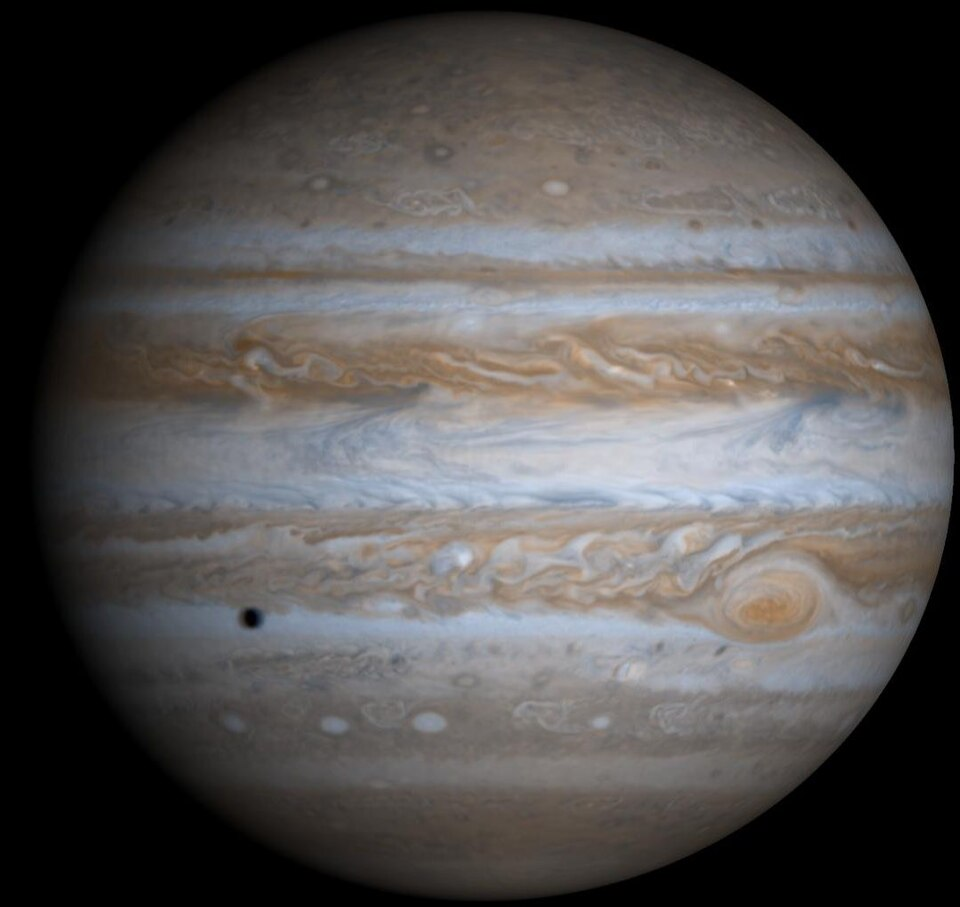
Observar la Gran Mancha Roja.
NASA/JPL/University of Arizona
http://photojournal.jpl.nasa.gov/catalog/PIA02873
Ficha original · Public domainMiniatura de Wikimedia Commons, sin recorte adicional.
Pendiente de revisión pedagógica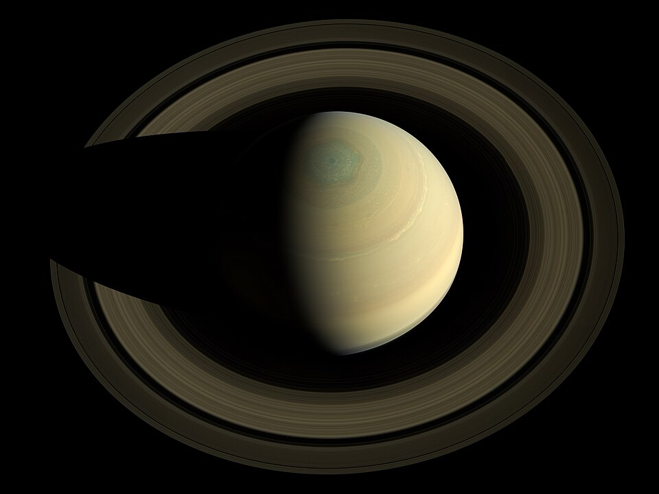
Identificar sus anillos.
NASA/JPL-Caltech/SSI/Cornell
JPEG File: http://www.nasa.gov/mission_pages/cassini/multimedia/pia17474.html#.Um1oeeig5w0 Full-Resolution TIFF: JPL Photojournal PIA17474: Jewel of the Solar System (NASA)
Ficha original · Public domainMiniatura de Wikimedia Commons, sin recorte adicional.
Pendiente de revisión pedagógica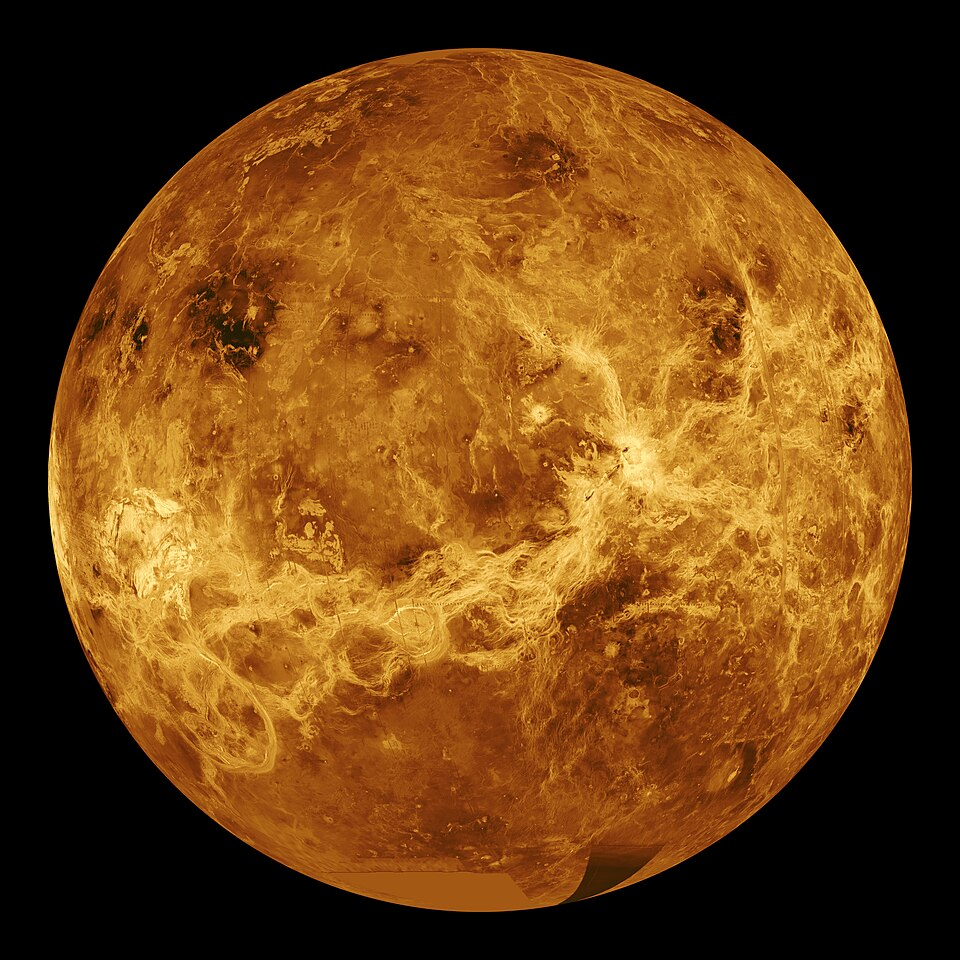
Imagen de la superficie de Venus obtenida con radar y coloreada; no representa su aspecto a simple vista. Explicar el calor con un diagrama aparte.
NASA/JPL
http://photojournal.jpl.nasa.gov/catalog/PIA00104
Ficha original · Public domainMiniatura de Wikimedia Commons, sin recorte adicional.
Pendiente de revisión pedagógica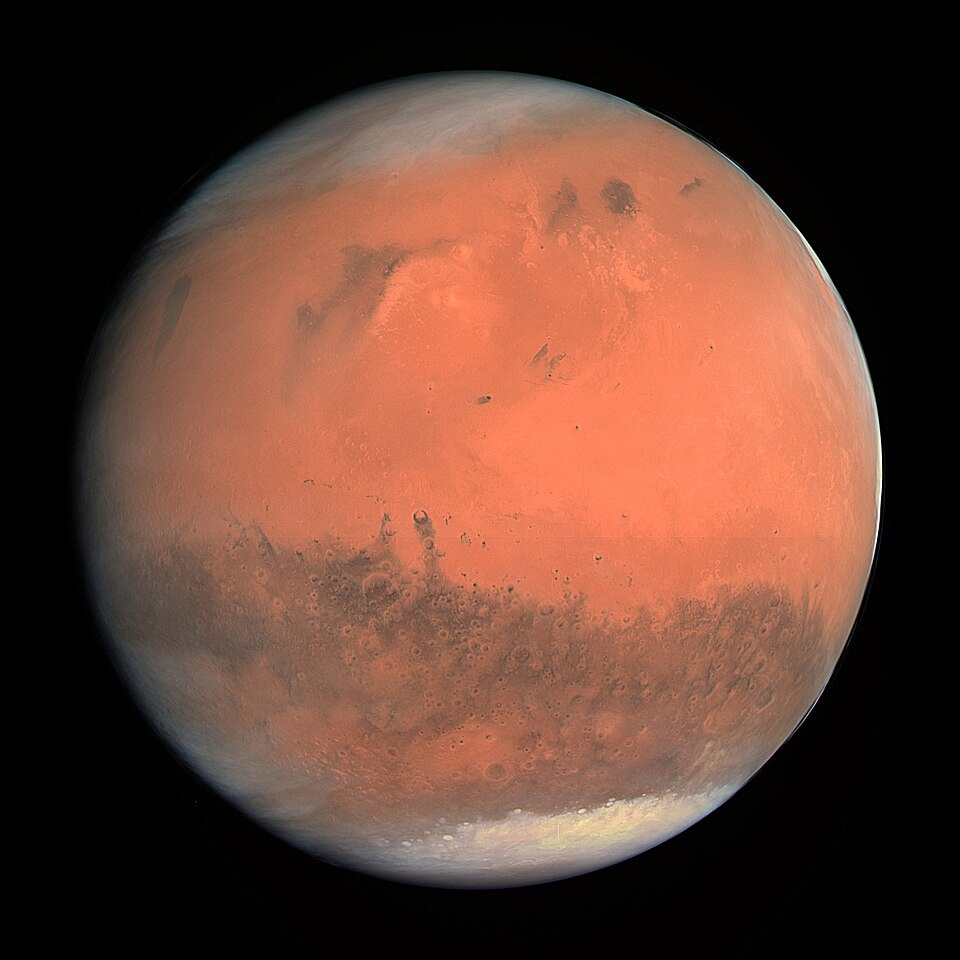
Observar su superficie.
ESA & MPS for OSIRIS Team MPS/UPD/LAM/IAA/RSSD/INTA/UPM/DASP/IDA, CC BY-SA 3.0 IGO
ESA & MPS for OSIRIS Team MPS/UPD/LAM/IAA/RSSD/INTA/UPM/DASP/IDA, CC BY-SA IGO 3.0
Ficha original · CC BY-SA 3.0 igoMiniatura de Wikimedia Commons, sin recorte adicional.
Pendiente de revisión pedagógica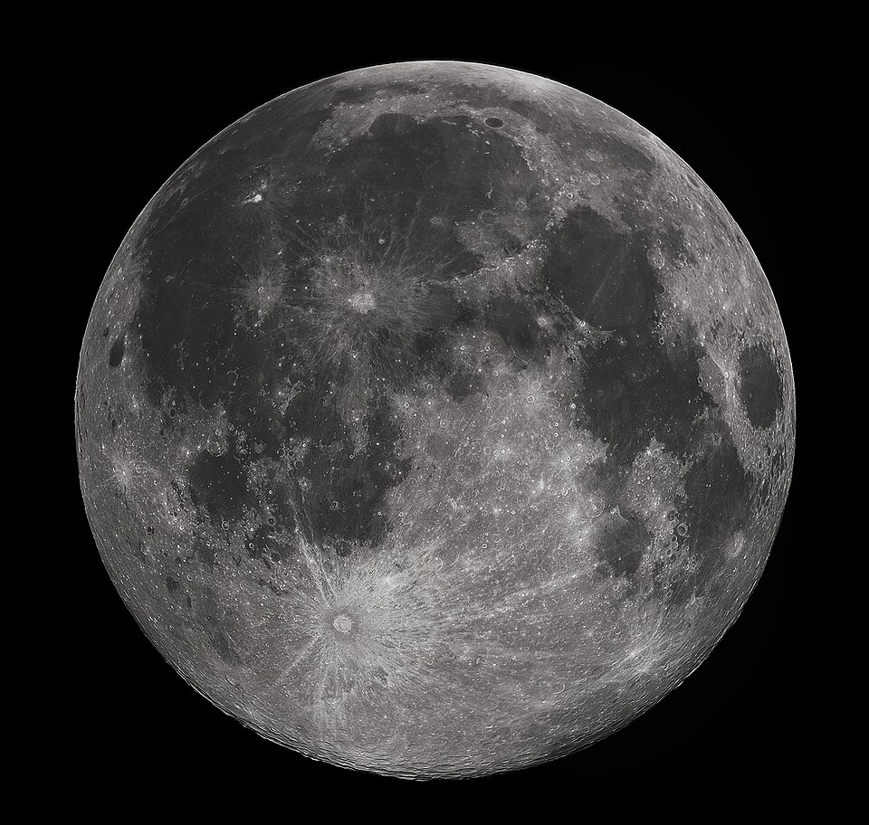
Reconocer cráteres y zonas oscuras.
Gregory H. Revera
Gregory H. Revera
Ficha original · CC BY-SA 3.0Miniatura de Wikimedia Commons, sin recorte adicional.
Pendiente de revisión pedagógica
Imagen del Sol en ultravioleta con color asignado; no representa su aspecto a simple vista.
NASA/SDO (AIA)
http://sdo.gsfc.nasa.gov/assets/img/browse/2010/08/19/20100819_003221_4096_0304.jpg
Ficha original · Public domainMiniatura de Wikimedia Commons, sin recorte adicional.
Pendiente de revisión pedagógica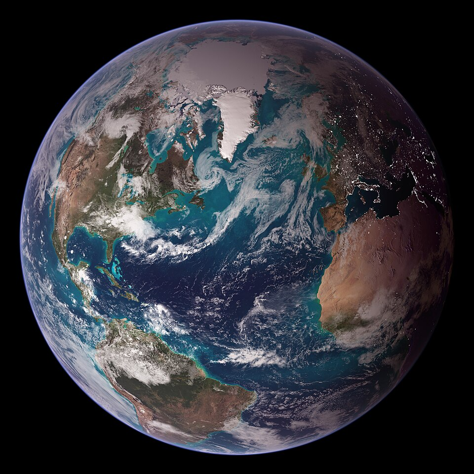
Composición de observaciones de la Tierra; reconocer océanos y continentes.
NASA images by Reto Stöckli, based on data from NASA and NOAA. Instrument: Terra - MODIS
Earth Observatory: Twin Blue Marbles
Ficha original · Public domainMiniatura de Wikimedia Commons, sin recorte adicional.
Pendiente de revisión pedagógica
Dar rostro al personaje histórico.
Henri Manuel
cdn-images-1.medium.com
Ficha original · Public domainMiniatura de Wikimedia Commons, sin recorte adicional.
Pendiente de revisión pedagógica
Reconocer el lugar y ubicarlo en Egipto.
Ricardo Liberato
All Gizah Pyramids
Ficha original · CC BY-SA 2.0Miniatura de Wikimedia Commons, sin recorte adicional.
Pendiente de revisión pedagógica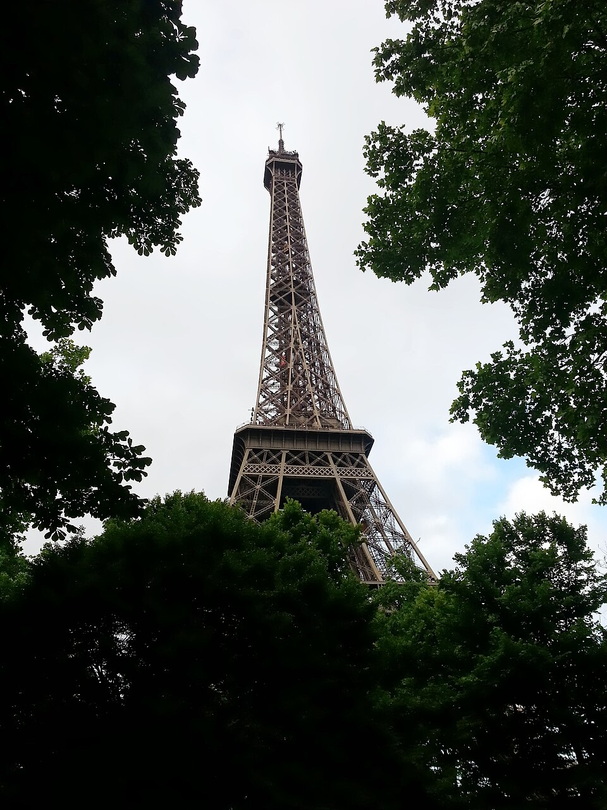
Reconocer el monumento y ubicarlo en Francia.
Mark.thurman92
Own work
Ficha original · CC BY-SA 3.0Miniatura de Wikimedia Commons, sin recorte adicional.
Pendiente de revisión pedagógica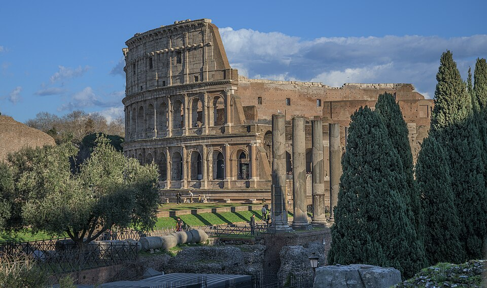
Reconocer un edificio de la antigua Roma.
Wilfredor
Own work
Ficha original · CC0Miniatura de Wikimedia Commons, sin recorte adicional.
Pendiente de revisión pedagógica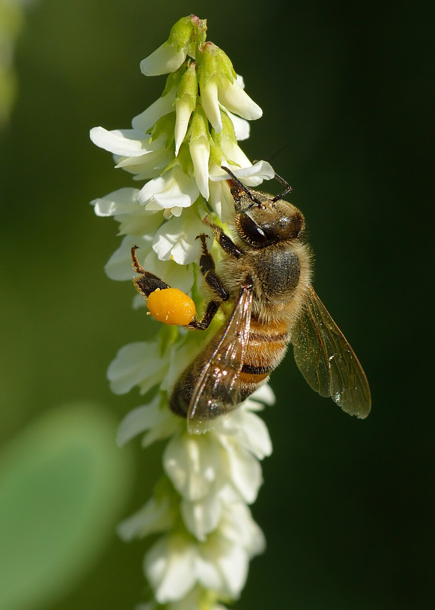
Observar la relación entre insectos y flores.
Ivar Leidus
Own work
Ficha original · CC BY-SA 4.0Miniatura de Wikimedia Commons, sin recorte adicional.
Pendiente de revisión pedagógica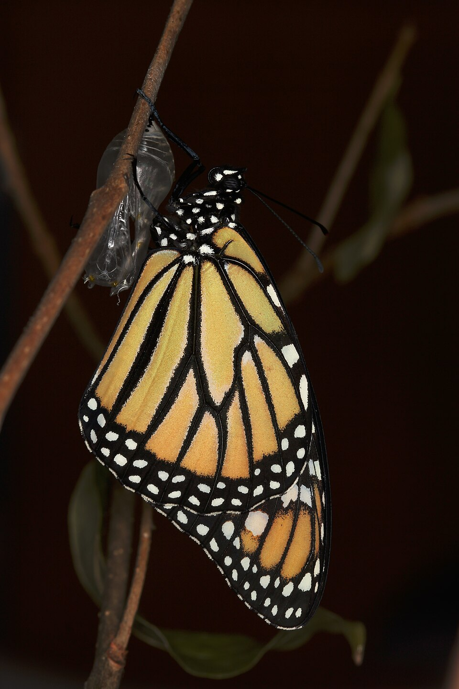
Reconocer la etapa adulta; completar con un ciclo propio.
Avenue
Own work
Ficha original · CC BY-SA 3.0Miniatura de Wikimedia Commons, sin recorte adicional.
Pendiente de revisión pedagógica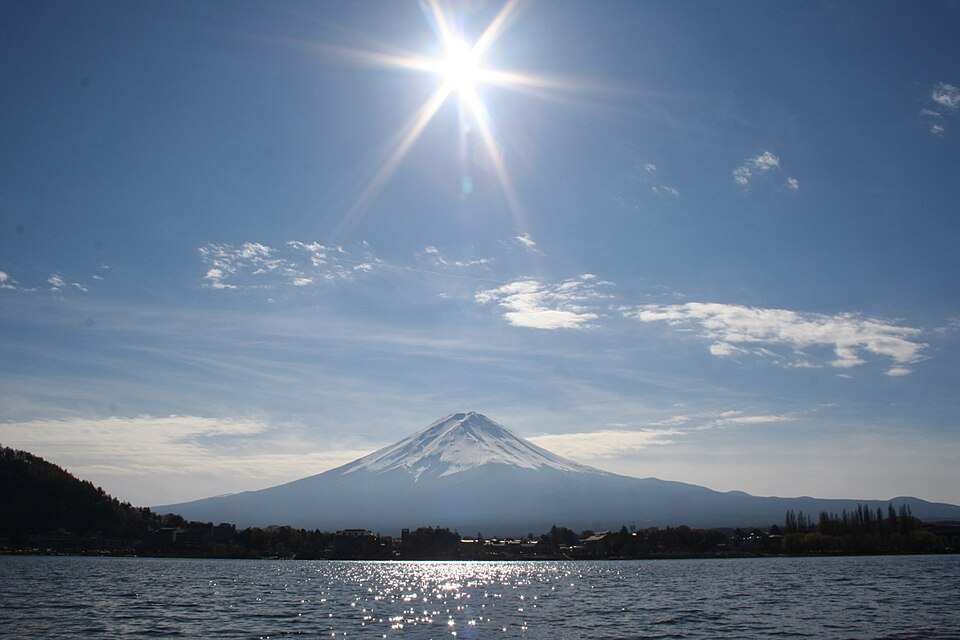
Identificar la forma de un volcán.
Subramaniam K V
photosubmission
Ficha original · CC BY 3.0Miniatura de Wikimedia Commons, sin recorte adicional.
Pendiente de revisión pedagógica


.jpg){kind=link}